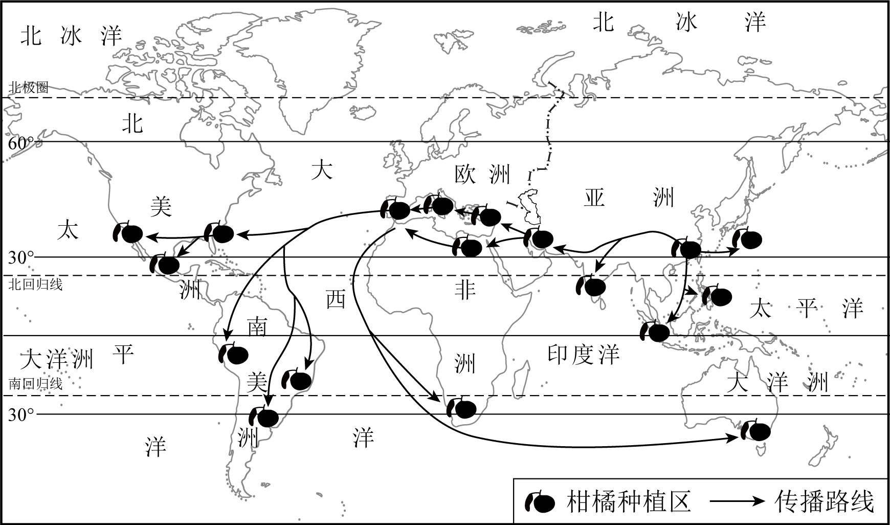

2023年北京中考地理 第13题 解析
13. 为提升辐射带动作用，该地区应进一步（ ）
①完善基础设施建设②提升科技创新能力
③推进生态环境治理④增加清洁能源输出
A. ①②③B. ①②④C. ①③④D. ②③④
【答案】11. C 12. C 13. A
【解析】
 11题详解】
11题详解】
长江三角洲地区地处长江下游地区，濒临东海和黄海，A错误。长江三角洲地区依托长江干流，不能联系京津冀地区，B错误。长江三角洲地区地处江海交汇之地，港口众多，交通便利，C正确。依托京杭运河，联系京津冀地区，D错误。故选C。
【12题详解】
该地区的沪宁杭工业基地矿产资源贫乏，以综合性工业为主，A错误。京津冀地区以首都为核心，科研力量雄厚，B错误。沪宁杭工业基地工业结构完整，国际竞争力强，C正确。珠江三角洲地区邻近香港澳门，消费市场广阔，D错误。故选C。
【13题详解】
为提升辐射带动作用，沪宁杭工业基地应进一步：完善基础设施建设、提升科技创新能力、推进生态环境治理，①②③正确。当地经济发达，能源需求量大，还要跨区域调入能源，故不能增加清洁能源输出，④错误。①②③正确，故选A。
【点睛】我国四大工业基地：我国北方的重工业基地--辽中南工业基地；我国北方最大的综合性工业基地--京津唐工业基地；我国最大的综合性工业基地--沪宁杭工业基地；我国对外开放前沿阵地，利用侨乡优势，发展外向型经济，以轻工业为主的工业基地--珠江三角洲工业基地。
我国是柑橘种植的起源地之一。柑橘通过多种途径向外传播。图为我国柑橘传播路线示意图。读图，完成下面小题。
